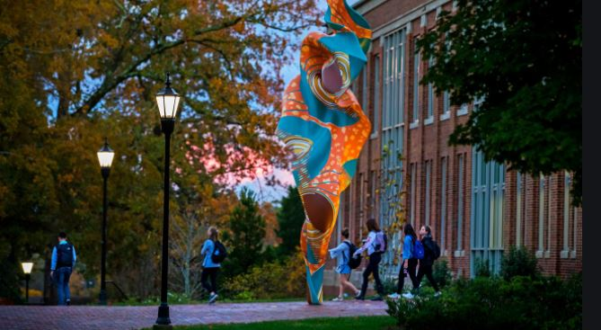

Fast Facts
- LOCATION: E. Craig Wall Jr Academic Center.
- ADDRESS: 325 Concord Road, Davidson, NC 28036
- PARKING: not at the building. avaliable along Concord Road, Faculty Drive, and in visitor parking at Baker Sports Complex.
- INSIDE: Classrooms, teaching labs, study rooms for students, and offices for faculty of biology, chemistry, psychology, neuroscience, and environmental science.
- WORTH A VISIT? yes.
- FAVORITE PART: study rooms or the fountain patio.
Description
You went to Wall, the primary classroom and labratory building for biology, chemistry, psychology, neuroscience, and environmental science. Inside, Davidson students attend class, visit and meet with professors, and perform labs.
Students also
spend countless hours in the study rooms completing work. Wall is also a A LEED Gold certified facility.
Your options are to:
- go to Chambers
- go to Sloan
- go to the Library